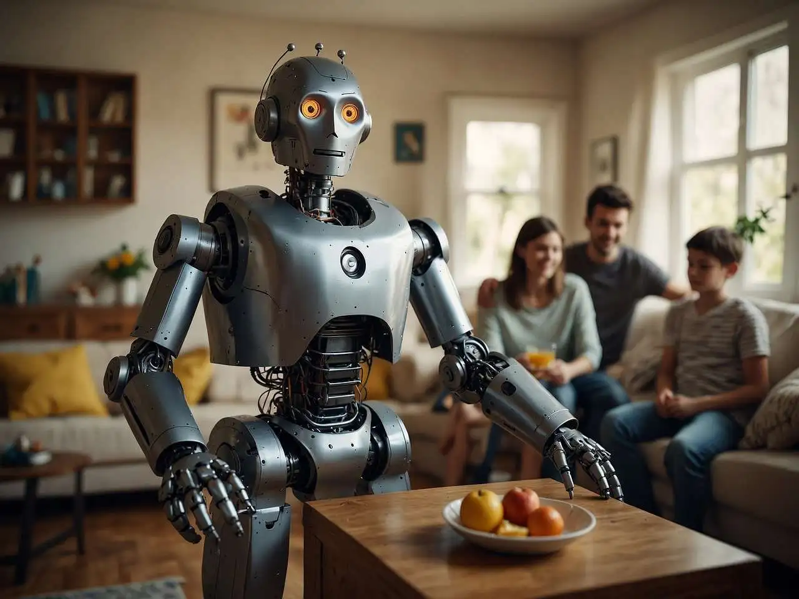
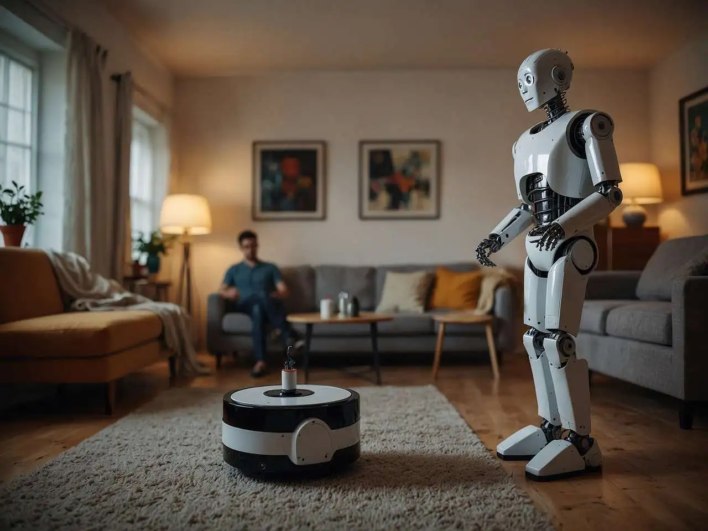

Table of Content
- 1. Integrated Environmental Analysis
- 2. Dynamic Cleaning Adaptation
- 3. Advanced Navigation and Interaction
- 4. Autonomous Maintenance and Upgrades
- 5. Integration with Smart Home Systems
- 6. User Interaction and Personalization
- 7. Eco Friendly & Maintainable Practices
- 8. Social and Educational Features
- 9. Security and Privacy Measures
- 10. Multi Language Support & Accessibility
- Conclusion
- Frequently Asked Questions
Janitor AI full details in advanced with example and discuss in depth
Janitor AI is a fictional concept often represented as a highly advanced artificial intelligence system designed for maintaining & managing physical spaces, much like a janitor but with much more complexity
1. Integrated Environmental Analysis
Air Quality Monitoring
Janitor AI many features sensors to continuously monitor air quality, including levels of particulate matter, VOCs (volatile organic compounds) & CO2. It provides users with detailed air quality reports and alerts if levels become unhealthy, suggesting actions such as ventilation or air purifier use.
Humidity & Temperature Control
Beyond cleaning, Janitor AI tracks humidity & temperature to help avoid issues like mold growth or excessive dryness. It can automatically adjust the room's climate by interfacing with smart sensors or dehumidifiers.
2.Dynamic Cleaning Adaptation
Context Aware Cleaning
operates machine learning to understand & adapt to different cleaning contexts. For example, it can separate between high traffic zones that need more frequent attention & low traffic areas that can be cleaned less often.

Material Sensitive Cleaning Modes
The Artificial intelligence can identify various types of flooring and surfaces like wood, tile, carpet, etc and adjust its cleaning methods accordingly. It adjusts brush types and cleaning solutions and suction power to optimize effectiveness without causing damage.
3. Advanced Navigation and Interaction
Interactive Navigation System:
Using LIDAR & computer vision Janitor AI creates & continuously updates a 3D map of the environment. It learns to navigate complex spaces, avoid dynamic obstacles like pets or people and even manage changes in room layouts.
Adaptive Route Planning:
The Artificial intelligence can dynamically alter its cleaning path based on real time changes. For example, if a room becomes cluttered or if an obstacle is detected, it recalculates the most efficient route to ensure thorough coverage.
4.Autonomous Maintenance and Upgrades
Self Maintenance Capabilities
This is equipped with a self-cleaning feature to maintain its internal components, like brushes and filters. It also performs regular diagnostics and can request maintenance or repairs autonomously.
Modular Upgrades
The AI system is designed to support modular upgrades and allowing users to easily add or replace components such as new sensors, enhanced cleaning tools or updated software features.

5. Integration with Smart Home Systems
Janitor Artificial intelligence integrates seamlessly with other smart home devices & systems. It can work in conjunction with smart thermostats & security cameras and lighting systems to provide a cohesive approach to home management.
For example, it can adjust its cleaning schedule based on the occupancy detected by other smart devices.
6. User Interaction & Personalization
Advanced User Interface
Janitor Artificial intelligence features a multi-modal interface that includes a touchscreen, voice commands & mobile app integration. Users can customize cleaning schedules, receive notifications & even interact with the Artificial intelligence for actual time adjustments.
Personalized User Profiles
Multiple user profiles allow for tailored experiences. Each profile can store individual preferences for cleaning schedules, areas of focus and even preferred cleaning products. This ensures that the Artificial intelligence meets the specific needs of different household members.
7. Eco Friendly & Maintainable Practices
Smart Cleaning Solution Dispensation
Janitor AI uses a smart dispenser for cleaning solutions, precisely measuring & dispensing the exact amount needed for each task. This reduces waste and ensures efficient use of cleaning products.
Waste Management Integration
The Artificial intelligence is capable of managing and disposing of waste in an environmentally friendly manner. It can sort recyclables from general waste & even integrate with local unused management systems for optimal disposal.
8. Social and Educational Features
Interactive Learning Modules
This ai can provide educational content on cleaning techniques, environmental conservation & smart home technologies. It can also offer tips & tricks based on its observations and user interactions.
Community and Support Integration
The Artificial intelligence includes features for community engagement, allowing users to connect with others using Janitor AI. This network can facilitate sharing of cleaning tips, software updates & troubleshooting support.
9. Security and Privacy Measures
Data Encryption and Privacy
All data collected by AI, including environmental readings and user preferences is encrypted to ensure privacy. The AI adheres to strict data protection regulations & allows users to control what information is shared or stored.
Secure Access Controls
The AI supports multi factor verification for accessing its settings and data. Users can set up personalized security measures to protect against unauthorized access or tampering.
10. Multi Language Support & Accessibility
To cater to diverse user needs, Janitor AI supports multiple languages and includes features for accessibility, such as voice commands for visually impaired users and customizable settings for different levels of physical ability.
Conclusion
A represents a leap forward in smart cleaning technology, combining advanced environmental monitoring and adaptive cleaning strategies and autonomous maintenance and user-centered features. Its integration with broader smart home ecosystems and focus on sustainability & commitment to security and privacy set it apart from conventional cleaning robots.
This full approach not only ensures a cleaner environment but also contributes to a smarter more connected home environment.
Frequently Asked Questions
what are janitor ai tokens
Janitor AI tokens refer to the usage limits executed when interacting with AI types on the Janitor AI platform. The tokens represent the number of words or characters the AI can process in a single interaction.
why janitor ai so slow
There are a few potential reasons why Janitor AI slow performance i)Server Load ii) Network Latency iii)Hardware Limitations iv)Backend Issues etc.
Recent Post
- Difference between narrow ai and general ai
- How AI is used in agriculture
- Janitor AI full details in depth with example
- What is the primary advantage of using generative ai in content creation
- ChatGPT features list, JBot, limitations, and benefits for you.
- The importance of computer networking & advantages of network